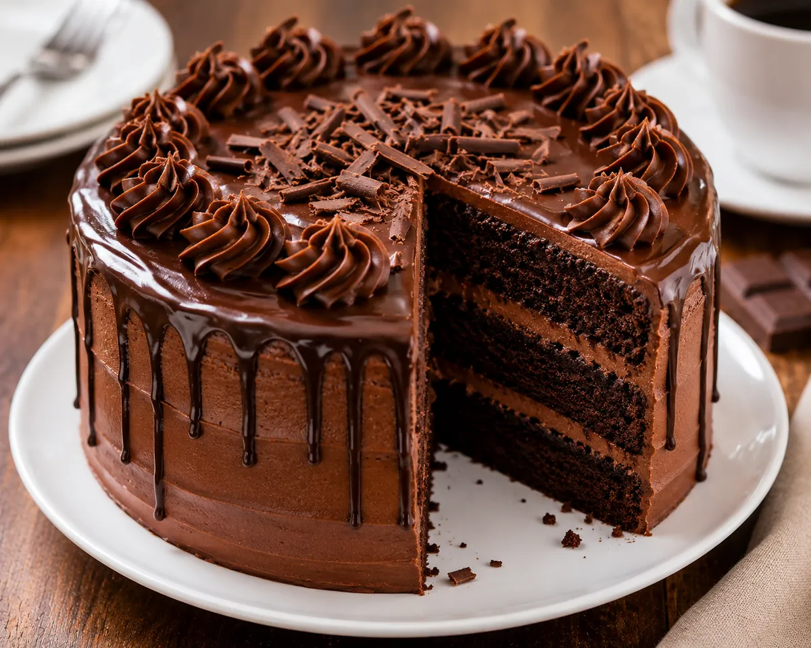

Fudge Chocolate Cake

This is the kind of chocolate cake you make for birthdays, Sunday dinners and any day that needs a little celebrating. It is a simple one-bowl batter, so there is no creaming of butter and no fussy folding, and it bakes into two tender, moist layers with a deep cocoa flavor.
The surprise is the batter itself: it is very thin and pourable. That is on purpose. The boiling water (or hot coffee) blooms the cocoa, which intensifies the chocolate flavor, and the extra liquid is what keeps the crumb soft after the cake cools. A generous coat of cocoa buttercream finishes it off.
The recipe makes 12 slices from two 9-inch layers. Allow about an hour for the layers to cool before frosting.
Ingredients
For the Cake
- 2 cups all-purpose flour
- 2 cups granulated sugar
- 3/4 cup unsweetened cocoa powder
- 2 tsp baking powder
- 1 1/2 tsp baking soda
- 1 tsp salt
- 2 large eggs
- 1 cup whole milk
- 1/2 cup vegetable oil
- 2 tsp vanilla extract
- 1 cup boiling water (or hot coffee)
For the Buttercream Frosting
- 1 cup unsalted butter, softened
- 3 cups powdered sugar
- 1/2 cup unsweetened cocoa powder
- 1/3 cup heavy cream or milk
- 1 tsp vanilla extract
Instructions
- Preheat the oven to 350°F (175°C). Grease and flour two 9-inch round cake pans, or line the bottoms with parchment.
- In a large bowl, whisk together the flour, sugar, cocoa powder, baking powder, baking soda and salt.
- Add the eggs, milk, oil and vanilla. Beat on medium speed for about 2 minutes until completely smooth.
- Carefully stir in the boiling water or hot coffee by hand. The batter will be very thin. That is normal and is the secret to a moist cake.
- Divide the batter evenly between the two pans. Bake for 30 to 35 minutes, until a toothpick inserted in the center comes out clean or with a few moist crumbs. Cool in the pans for 10 minutes, then turn out onto a rack and cool completely.
- Make the frosting: beat the softened butter for 2 minutes until creamy. Add the powdered sugar and cocoa powder alternately with the cream, beating until smooth. Add the vanilla and beat on high until light and fluffy.
- Place one cooled layer on a plate and spread with frosting. Top with the second layer and frost the top and sides. Add chocolate shavings if you like.
Ingredient Notes and Substitutions
Cocoa powder
Use plain unsweetened cocoa powder, not hot chocolate mix. Natural cocoa gives a classic, slightly tangy chocolate flavor. Dutch-process cocoa also works and gives a darker, smoother, milder cake.
Hot water or coffee
Water gives a clean chocolate flavor. Hot coffee does not make the cake taste like coffee, but it deepens the chocolate. Decaf works if you prefer.
Milk
Whole milk gives the best texture. Buttermilk can replace it one-for-one for a slightly tangier, softer crumb. Low-fat milk works but the cake will be a little less rich.
Oil
Vegetable, canola or another neutral oil keeps the cake moist for days. Melted butter can be used, but the cake will be slightly firmer once chilled.
Tips for Success
- Spoon the flour into the measuring cup and level it off. Scooping straight from the bag packs in extra flour and can make the cake dry.
- Do not be tempted to add more flour to the thin batter.
- Check the cake at 30 minutes. Overbaked chocolate cake dries out quickly.
- Let the layers cool completely before frosting, or the buttercream will melt and slide.
- Sift the powdered sugar and cocoa for the frosting to avoid lumps.
- If the frosting is too stiff, beat in cream one teaspoon at a time. If it is too soft, add a little more powdered sugar.
Variations
- 9x13-inch sheet cake: bake in a greased pan for about 35 to 40 minutes.
- Cupcakes: fill liners about two-thirds full and bake for roughly 18 to 22 minutes. The recipe makes around 24.
- Add 1/2 cup chocolate chips to the batter, or fill the layers with raspberry jam.
- Dust with powdered sugar instead of frosting for a simple snack cake.
Storage and Make-Ahead
Store the frosted cake covered at room temperature for up to 2 days, or in the refrigerator for up to 5 days. Let slices sit out for 20 to 30 minutes before serving so the cake and frosting soften. To make ahead, wrap the cooled, unfrosted layers tightly in plastic wrap and freeze for up to 3 months, then thaw at room temperature and frost.
Frequently Asked Questions
Why is my cake batter so thin?
The recipe includes a full cup of boiling water or hot coffee, which makes the batter pourable. That extra liquid is what keeps the baked cake moist.
Why did my chocolate cake turn out dry?
The usual causes are too much flour from scooping, or baking a few minutes too long. Measure carefully and start checking for doneness at 30 minutes.
Can I make this without eggs?
This recipe was written with two eggs and has not been adapted for an egg-free version, so I would not guess at a swap.
Can I bake it in one pan instead of two?
Yes. Use a 9x13-inch pan and bake until a toothpick comes out clean, usually 35 to 40 minutes.
How do I get smooth frosting?
Start with properly softened butter, sift the sugar and cocoa, and beat for a few minutes at the end until it looks light and fluffy.